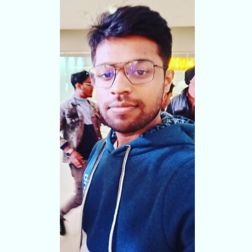

I am a Data Science & Machine Learning enthusiast who has deep interest in the fundamental concepts of AI & loves to uncover the hidden secrets and insights from
messy data!
I have completed my Bachelor's in Electrical Engineering. But, during my 3rd Semester I developed interest in Machine Learning and started learning it.
As it was quite fascinating to see a model predicting & learning from its own mistakes.
I love to develop data-driven applications using Machine Learning, Deep Learning, Natural Language Processing and Computer Vision!
I'm working towards a role where I can engage with a group of like-minded people who dream to
bring revolution in the world with data! It gives me immense pleasure to perform and analyze the data, covering some useful informations which can produce some great results.
Skills :
Data Structures and Algorithms | Python | Java | SQL | Data Science | Machine Learning |
Deep Learning | NLP | Statistics & Probability | Flask | REST APIs

Hi there, I'm Kishlay Kumar
My Interests:
- Software Development
- Data Science and Artificial Intelligence
|
|
|